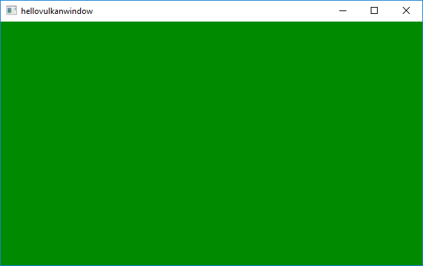

Hello Vulkan Window Example
Shows the basics of using QVulkanWindow.
The Hello Vulkan Window Example shows the basics of using QVulkanWindow in order to display rendering with the Vulkan graphics API on systems that support this.

In this example there will be no actual rendering: it simply begins and ends a render pass, which results in clearing the buffers to a fixed value. The color buffer clear value changes on every frame.
Startup
Each Qt application using Vulkan will have to have a Vulkan instance which encapsulates application-level state and initializes a Vulkan library.
A QVulkanWindow must always be associated with a QVulkanInstance and hence the example performs instance creation before the window. The QVulkanInstance object must also outlive the window.
QVulkanInstance inst;
#ifndef Q_OS_ANDROID
inst.setLayers(QByteArrayList() << "VK_LAYER_LUNARG_standard_validation");
#else
inst.setLayers(QByteArrayList()
<< "VK_LAYER_GOOGLE_threading"
<< "VK_LAYER_LUNARG_parameter_validation"
<< "VK_LAYER_LUNARG_object_tracker"
<< "VK_LAYER_LUNARG_core_validation"
<< "VK_LAYER_LUNARG_image"
<< "VK_LAYER_LUNARG_swapchain"
<< "VK_LAYER_GOOGLE_unique_objects");
#endif
if (!inst.create())
qFatal("Failed to create Vulkan instance: %d", inst.errorCode());
The example enables validation layers, when supported. When the requested layers are not present, the request will be ignored. Additional layers and extensions can be enabled in a similar manner.
VulkanWindow w;
w.setVulkanInstance(&inst);
w.resize(1024, 768);
w.show();
Once the instance is ready, it is time to create a window. Note that w lives on the stack and is declared after inst.
The QVulkanWindow Subclass
To add custom functionality to a QVulkanWindow, subclassing is used. This follows the existing patterns from QOpenGLWindow and QOpenGLWidget. However, QVulkanWindow utilizes a separate QVulkanWindowRenderer object. This resembles QQuickFramebufferObject, and allows better separation of the functions that are supposed to be reimplemented.
class VulkanRenderer : public QVulkanWindowRenderer { public: VulkanRenderer(QVulkanWindow *w); void initResources() override; void initSwapChainResources() override; void releaseSwapChainResources() override; void releaseResources() override; void startNextFrame() override; private: QVulkanWindow *m_window; QVulkanDeviceFunctions *m_devFuncs; float m_green = 0; }; class VulkanWindow : public QVulkanWindow { public: QVulkanWindowRenderer *createRenderer() override; };
The QVulkanWindow subclass reimplements the factory function QVulkanWindow::createRenderer(). This simply returns a new instance of the QVulkanWindowRenderer subclass. In order to be able to access various Vulkan resources via the window object, a pointer to the window is passed and stored via the constructor.
QVulkanWindowRenderer *VulkanWindow::createRenderer() { return new VulkanRenderer(this); } VulkanRenderer::VulkanRenderer(QVulkanWindow *w) : m_window(w) { }
Graphics resource creation and destruction is typically done in one of the init - resource functions.
void VulkanRenderer::initResources() { qDebug("initResources"); m_devFuncs = m_window->vulkanInstance()->deviceFunctions(m_window->device()); }
The Actual Rendering
QVulkanWindow subclasses queue their draw calls in their reimplementation of QVulkanWindowRenderer::startNextFrame(). Once done, they are required to call back QVulkanWindow::frameReady(). The example has no asynchronous command generation, so the frameReady() call is made directly from startNextFrame().
void VulkanRenderer::startNextFrame() { m_green += 0.005f; if (m_green > 1.0f) m_green = 0.0f; VkClearColorValue clearColor = {{ 0.0f, m_green, 0.0f, 1.0f }}; VkClearDepthStencilValue clearDS = { 1.0f, 0 }; VkClearValue clearValues[2]; memset(clearValues, 0, sizeof(clearValues)); clearValues[0].color = clearColor; clearValues[1].depthStencil = clearDS; VkRenderPassBeginInfo rpBeginInfo; memset(&rpBeginInfo, 0, sizeof(rpBeginInfo)); rpBeginInfo.sType = VK_STRUCTURE_TYPE_RENDER_PASS_BEGIN_INFO; rpBeginInfo.renderPass = m_window->defaultRenderPass(); rpBeginInfo.framebuffer = m_window->currentFramebuffer(); const QSize sz = m_window->swapChainImageSize(); rpBeginInfo.renderArea.extent.width = sz.width(); rpBeginInfo.renderArea.extent.height = sz.height(); rpBeginInfo.clearValueCount = 2; rpBeginInfo.pClearValues = clearValues; VkCommandBuffer cmdBuf = m_window->currentCommandBuffer(); m_devFuncs->vkCmdBeginRenderPass(cmdBuf, &rpBeginInfo, VK_SUBPASS_CONTENTS_INLINE); // Do nothing else. We will just clear to green, changing the component on // every invocation. This also helps verifying the rate to which the thread // is throttled to. (The elapsed time between startNextFrame calls should // typically be around 16 ms. Note that rendering is 2 frames ahead of what // is displayed.) m_devFuncs->vkCmdEndRenderPass(cmdBuf); m_window->frameReady(); m_window->requestUpdate(); // render continuously, throttled by the presentation rate }
To get continuous updates, the example simply invokes QWindow::requestUpdate() in order to schedule a repaint.
Running the Example
To run the example from Qt Creator, open the Welcome mode and select the example from Examples. For more information, visit Building and Running an Example.